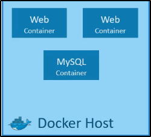

Container Orchestration
Come abbiamo imparato dall'applicazione precedente,
abbiamo imparato a creare la nostra applicazione su Docker,
usando i container.

Ora cosa facciamo? Come gestiamo le cose in Production?
Cosa fare se la nostra applicazione si basa su container,
come DB o Messaging services, oppure altri servizi backend?
E se il numero di utenti aumenta e devi scalare la tua applicazione?
E se il numero di utenti diminuisce, come si scala down?
Per gestire tutte queste opzioni, hai necessità di una piattaforma
sovrastante, con il proprio set di risorse e permessi.
Questa piattaforma deve "orchestrare" le connessioni tra containers
e scalare in automatico up/down (in base al carico).
Questo processo di deployare in modo automatico e gestire i containers
viene detto "Container Orchestration".

Ecco alcuni "Container Orchestration" tools:

Nonostante Docker Swarm sia semplice da usare, manca
di alcune features avanzate per le applicazioni più complesse.
D'altro canto, Mesos è difficile da fare setup e da cominciare,
ma supporta differenti opzioni avanzate.
Kubernetes è un po' difficile da cominciare e da fare setup,
ma provvede molte opzioni per customizzare i deployments,
e supporta il deploy.
Alcune caratteristiche buona di Kubernetes:
E' supportato da alcuni Cloud Service pubblici
come Azure, AWS, GCP.
Vantaggi della Container Orchestration
Ecco alcuni vantaggi della Container Orchestration:
La tua applicazione rimane disponibile anche in caso
di hardware down, perché abbiamo differenti
instanze della tua applicazione che runnano su differenti nodi.

Il traffico è bilanciato attraverso i container:
in questo modo se vi sono più richieste dell'applicativo,
sono generate!